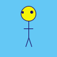

art that in whole or in part has been created with the use of an autonomous system - wikipedia
any art practice where the artist creates a process, such as a set of natural language rules, a computer program, a machine, or other procedural invention, which is then set into motion with some degree of autonomy contributing to or resulting in a completed work of art - Philip Galanter
"Generative" is where you lose control of a machine which does exactly what you tell it. – eu-gene
int add(int n1, int n2) {
int answer = n1 + n2;
return answer;
}
void draw() {
...
}
void setup() {
...
}
line(x1, y1, x2, y2);
ellipse(x, y, width, height);
Color myColour = color(r, g, b);
background(myColour);
stroke(myColour);
fill(myColour);
color yellow = color(245, 245, 10);
color navy = color(25, 10, 100);
color blue = color(100,200,245);
void draw() {
background(blue);
fill(yellow);
stroke(navy);
ellipse(50, 25, 25, 25);
fill(navy);
ellipse(40, 22.5, 3, 3);
ellipse(55, 22.5, 4, 4);
line(50, 37.5, 50, 65);
line(42.5, 50, 57.5, 50);
line(50, 65, 55, 80);
line(50, 65, 45, 80);
}

color[] colours = {#66CCFF, #5D6B70, #59a699, #DEFF69, #B1C2C9, #FFFFFF};
int colourCounter = 0;
int WINDOWSIZE = 450;
boolean started = false;
int opacity = 20;
color COLOUR;
void setup() {
size(WINDOWSIZE, WINDOWSIZE);
frameRate(30);
strokeWeight(1);
fill(#FFFFFF, opacity);
clearBackground();
}
void draw() {
if(started) {
stainedGlass();
}
}
void mousePressed() {
if(!started) {
started = true;
}
clearBackground();
}
color getNextColour() {
colourCounter++;
colourCounter = colourCounter%colours.length;
return colours[colourCounter];
}
void clearBackground() {
background(#000000);
}
int r() {
return int(random(WINDOWSIZE));
}
void stainedGlass() {
fill(getNextColour(), 10);
beginShape();
vertex(r(), r());
bezierVertex(r(), r(), r(), r(), r(), r());
bezierVertex(r(), r(), r(), r(), r(), r());
endShape();
}
int SIZE = 450;
boolean started = false;
Brush brush;
void setup() {
size(SIZE, SIZE);
strokeCap(SQUARE);
clearBackground();
strokeWeight(12);
brush = new Brush(random(SIZE), 20);
}
void draw() {
if(started) {
brush.paint();
}
}
class Brush {
float x1, y1, x2, y2;
int mobility;
color colour;
color[] colours = {#FF8E64, #FF581A,#FF733F,#FFAD8E,#FFD3C3,#FFBC64,#FFE5C3,#FFCE8E};
int cindex;
int tr;
int baset = 5;
int tvar = 5;
Brush(float y1, int m) {
this.x1 = 0;
this.y1 = y1;
this.mobility = m;
this.tr = baset + int(random(-tvar, tvar));
this.cindex = 0;
getNextColour();
}
void getNextColour() {
cindex++;
cindex = cindex % colours.length;
colour = colours[cindex];
}
void move() {
y1 = y2;
y2 = y1 + random(-mobility, mobility);
if(switchSides()) {
x1 = SIZE - x1;
getNextColour();
}
if(y2 >= SIZE || y2 <= 0) { //stop it from jumping off canvas
y2 = random(0, SIZE);
}
}
void setTransparency() {
tr = baset + int(random(-tvar, tvar));
stroke(colour, tr);
}
void paint() {
setTransparency();
move();
drawLine();
}
void drawLine() {
float n = 20.0;
float xmid;
x2 = random(0, SIZE);
for(int i = 0; i < n; i++) {
xmid = x1 + ((1+i)*(x2-x1)/n);
line(x1, y1, xmid, y1);
}
}
}
boolean switchSides() {
return random(100) > 99;
}
void clearBackground() {
background(#101010);
}
void mousePressed() {
clearBackground();
started = true;
}
Thanks :)
Thanks :)